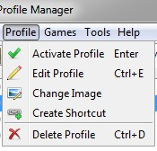
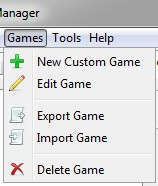
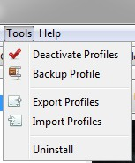
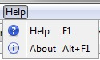

New Profile, creates a new profile for the current game.
Auto Create Profiles, attempts to create profiles based on the saved games and folders in the current game's saved game folder. A profile will be created based on the name of the character in the saved game file and from the name of any folders found in the save game folder.
Launch Game, functions the same as the launch game button.
Settings, opens the settings and configuration window. See the Configuration and Settings page for more information on this window.
Exit, causes the Profile Manager to close.

The menu options in this menu will not become enabled until a profile is selected from the profile list.
Activate Profile, activates the current profile. When a profile is active the game will load and save games to this profile.
Edit Profile, brings up a dialog where you can edit details about a profile like it's name. See How to edit a Profile for more information.
Change Image, brings up a window where you can set the profile's image.
Create Shortcut, creates a desktop shortcut that will active the profile and then start it's game.
Delete Profile, deletes the selected profile, it also provides the option to delete the profile's saved games.

New Custom Game, opens a window to create a new custom game. See custom games for more information.
Edit Game, opens a window to edit the current custom game. This button is only enabled when the currenlty selected tab is a custom game.
Export Game, exports the current custom game to an xml file suitable for importing. This button is only enabled when the currently selected tab is a custom game.
Import Game, imports a custom game from an xml file. This button and Export Game allow for moving custom games between computers and users.
Delete Game, removes the currently select custom game. This button is only enabled when the currently selected tab is a custom game.

Deactivate Profiles, turns all profiles off. This resets the .INI file (for games that use one) to point back to the default save game folder.
Backup Profile, takes the currently selected profile and stores all of the saves into a compressed archive. The compressing settings can be controlled in the settings window.
Export Profiles, exports the profiles for the currently selected game into an xml file. This can be used to backup the profile data or transfer it to another computer.
Import Profiles, imports profiles from an xml file. This adds new profiles, and updates existing profiles (only profiles with matching IDs and saved game directories will be updated).
Uninstall, brings up the uninstallation wizard. The uninstallation wizard will help remove the Profile Manager and undo any changes that it has made.

Help, displays this help documentation (obviously).
About, displays a window with information about the profile manager.